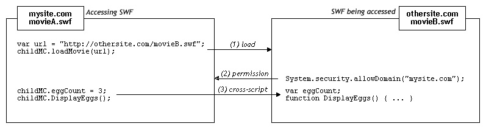

| Package | System |
| Class | public class security |
| Inheritance | security |
| Player version: | Flash Player 6 |
For more information related to security, see the following:
| Property | ||
|---|---|---|
| sandboxType : String
[static][read-only]Indicates the type of security sandbox in which the calling SWF file is operating.
|
||
| Properties inherited from class Object | |
|---|---|
__proto__, __resolve, constructor, prototype |
| Method | ||
|---|---|---|
|
allowDomain(domain1:String):Void
[static]Lets SWF files and HTML files in the identified domains access objects and variables in the SWF file that contains the
allowDomain() call. |
||
|
allowInsecureDomain(domain:String):Void
[static]Lets SWF files and HTML files in the identified domains access objects and variables in the calling SWF file, which is hosted by means of the HTTPS protocol.
|
||
|
loadPolicyFile(url:String):Void
[static]Looks for a policy file at the location specified by the
url parameter. |
||
| Methods inherited from class Object | |
|---|---|
addProperty, hasOwnProperty, isPropertyEnumerable, isPrototypeOf, registerClass, toString, unwatch, valueOf, watch |
| sandboxType | property |
sandboxType:String [read-only]
| Player version: | Flash Player 8 — See the description for version-specific details. |
Indicates the type of security sandbox in which the calling SWF file is operating.
System.security.sandboxType has one of the following values:
remote: This SWF file is from an Internet URL, and will operate under domain-based sandbox rules.localWithFile: This SWF file is a local file, and has not been trusted by the user, and was not published with a networking designation. This SWF file may read from local data sources, but may not communicate with the Internet.localWithNetwork: This SWF file is a local file, and has not been trusted by the user, and was published with a networking designation. This SWF may communicate with the Internet, but may not read from local data sources.localTrusted: This SWF file is a local file, and has been trusted by the user, using either the Settings Manager or a FlashPlayerTrust configuration file. This SWF file may both read from local data sources and communicate with the Internet.Note that this property may be examined from a SWF file of any version, but is only supported in Flash Player 8 or greater. This unusual arrangement means that you can examine this property, for example, from a version 7 SWF file playing in Flash Player 8. This all-versions support means that, if you publish for a version earlier than 8, you will not know at publish time whether this property will be supported or not at playback time. Thus, in a SWF file of version 7 or lower, you may find that this property has an undefined value; that should only happen when the player version (indicated by System.capabilities.version) is less than 8. In that situation, you can determine the sandbox type according to whether your SWF file's URL is a local file or not. If so, you can assume Flash Player will classify your SWF as "localTrusted" (prior to Flash Player 8, this was how all local content was treated). If not, you can assume Flash Player will classify your SWF file as "remote".
For more information related to security, see the following:
public static function get sandboxType():String
| allowDomain | () | method |
public static function allowDomain(domain1:String):Void
| Player version: | Flash Player 6 — Behavior changed in Flash Player 7; behavior changed in Flash Player 8. |
Lets SWF files and HTML files in the identified domains access objects and variables in the SWF file that contains the allowDomain() call.
If two SWF files are served from the same domain — for example, http://mysite.com/movieA.swf and http://mysite.com/movieB.swf — then movieA.swf can examine and modify variables, objects, properties, methods, and so on in movieB.swf, and movieB.swf can do the same for movieA.swf. This is called cross-movie scripting or simply cross-scripting.
If two SWF files are served from different domains — for example, http://mysite.com/movieA.swf and http://othersite.com/movieB.swf — then, by default, Flash Player does not allow movieA.swf to script movieB.swf, nor movieB.swf to script movieA.swf. A SWF file gives SWF files from other domains permission to script it by calling System.security.allowDomain(). This is called cross-domain scripting. By calling System.security.allowDomain("mysite.com"), movieB.swf gives movieA.swf permission to script movieB.swf.
In any cross-domain situation, two parties are involved, and it's important to be clear about which side is which. For the purposes of this discussion, the side performing the cross-scripting is called the accessing party (usually the accessing SWF), and the other side is called the party being accessed (usually the SWF being accessed). To continue the example, when movieA.swf scripts movieB.swf, movieA.swf is the accessing party, and movieB.swf is the party being accessed.

Cross-domain permissions that are established with System.security.allowDomain() are asymmetrical. In the previous example, movieA.swf can script movieB.swf, but movieB.swf cannot script movieA.swf, because movieA.swf has not called System.security.allowDomain() to give othersite.com permission to script movieA.swf. You can set up symmetrical permissions by having both SWF files call System.security.allowDomain().
In addition to protecting SWF files from cross-domain scripting originated by other SWF files, Flash Player protects SWF files from cross-domain scripting originated by HTML files. HTML-to-SWF scripting can be performed with older Flash browser functions such as SetVariable or callbacks established by using ExternalInterface.addCallback(). When HTML-to-SWF scripting crosses domain boundaries, the SWF file being accessed must call System.security.allowDomain(), just as when the accessing party is a SWF file, or the operation will fail.
Specifying an IP address as a parameter to System.security.allowDomain() does not permit access by all parties that originate at the specified IP address. Instead, it permits access only by parties that were loaded by explicitly specifying that IP address in their URLs, rather than by a domain name that maps to that IP address.
Version-specific differences
Flash Player's cross-domain security rules have evolved from version to version. The following table summarizes the differences.
| Latest SWF version involved in the cross-scripting operation. | allowDomain() needed? | allowInsecureDomain() needed? | Which SWF must call allowDomain() or allowInsecureDomain()? | What can be specified in allowDomain() or allowInsecureDomain()? |
|---|---|---|---|---|
5 or earlier | No | No | N/A | N/A |
6 | Yes, if superdomains don't match | No | The SWF file being accessed, or any SWF file with the same superdomain as the SWF file being accessed |
|
7 | Yes, if domains don't match exactly | Yes, if performing HTTP-to-HTTPS access (even if domains match exactly) | The SWF file being accessed, or any SWF file with exactly the same domain as the SWF file being accessed |
|
8 or later | Yes, if domains don't match exactly | Yes, if performing HTTP-to-HTTPS access (even if domains match exactly) | SWF being accessed |
|
The versions that control the behavior of Flash Player are SWF versions (the published version of a SWF file), not the version of Flash Player itself. For example, when Flash Player 8 is playing a SWF file published for version 7, it applies behavior that is consistent with version 7. This practice ensures that player upgrades do not change the behavior of System.security.allowDomain() in deployed SWF files.
The version column in the previous table shows the latest SWF version involved in a cross-scripting operation. Flash Player determines its behavior according to either the accessing SWF file's version or the version of the SWF file that is being accessed, whichever is later.
The following paragraphs provide more detail about Flash Player security changes involving System.security.allowDomain().
Version 5. No cross-domain scripting restrictions.
Version 6. Cross-domain scripting security is introduced. By default, Flash Player forbids cross-domain scripting; System.security.allowDomain() can permit it. To determine whether two files are in the same domain, Flash Player uses each file's superdomain, which is the exact host name from the file's URL, minus the first segment, down to a minimum of two segments. For example, the superdomain of www.mysite.com is mysite.com. This example would permit SWF files from www.mysite.com and store.mysite.com to script each other without calling System.security.allowDomain().
Version 7. Superdomain matching is changed to exact domain matching. Two files are permitted to script each other only if the host names in their URLs are identical; otherwise, a call to System.security.allowDomain() is required. By default, files loaded from non-HTTPS URLs are no longer permitted to script files loaded from HTTPS URLs, even if the files are loaded from the exactly the same domain. This restriction helps protect HTTPS files, because a non-HTTPS file is vulnerable to modification during download, and a maliciously modified non-HTTPS file could corrupt an HTTPS file, which is otherwise immune to such tampering. System.security.allowInsecureDomain() is introduced to allow HTTPS SWF files that are being accessed to voluntarily disable this restriction, but Adobe recommends against using System.security.allowInsecureDomain().
Version 8. Two major areas of change:
System.security.allowDomain() now permits cross-scripting operations only if the SWF file being accessed is the SWF file that called System.security.allowDomain(). In other words, a SWF file that calls System.security.allowDomain() now permits access only to itself. In previous versions, calling System.security.allowDomain() permitted cross-scripting operations where the SWF file being accessed could be any SWF file in the same domain as the SWF file that called System.security.allowDomain(). Calling System.security.allowDomain() previously opened up the entire domain of the calling SWF file.System.security.allowDomain("*") and System.security.allowInsecureDomain("*"). The wildcard (*) value permits cross-scripting operations where the accessing file is any file at all, loaded from anywhere. Think of the wildcard as a global permission. Wildcard permissions can be useful in general, and in particular they are required to enable certain kinds of operations under the new local file security rules in Flash Player 8. Specifically, for a local SWF file with network-access permissions to script a SWF file on the Internet, the Internet SWF file being accessed must call System.security.allowDomain("*"), reflecting that the origin of a local SWF file is unknown. (If the Internet SWF file being accessed is loaded from an HTTPS URL, the Internet SWF file must instead call System.security.allowInsecureDomain("*").)Occasionally, you may encounter the following situation: You load a child SWF file from a different domain and want to allow the child SWF file to script the parent SWF file, but you don't know the final domain from which the child SWF file will come. This can happen, for example, when you use load-balancing redirects or third-party servers.
In this situation, you can use the MovieClip._url property as a parameter to this method. For example, if you load a SWF file into the movie clip my_mc, you can call System.security.allowDomain(my_mc._url). If you do this, be sure to wait until the SWF file in my_mc begins loading, because the _url property does not have its final, correct value until this time. The best way to determine when a child SWF file has begun loading is to use MovieClipLoader.onLoadStart.
The opposite situation can also occur; that is, you might create a child SWF file that wants to allow its parent to script it, but doesn't know what the domain of its parent will be. In this situation, call System.security.allowDomain(_parent._url) from the child SWF. You don't have to wait for the parent SWF file to load; the parent will already be loaded by the time the child loads.
If you are publishing for Flash Player 8, you can also handle these situations by calling System.security.allowDomain("*"). However, this can sometimes be a dangerous shortcut, because it allows the calling SWF file to be accessed by any other SWF file from any domain. It is usually safer to use the _url property.
For more information related to security, see the following:
domain1:String — One or more strings that specify domains that can access objects and variables in the SWF file that contains the System.Security.allowDomain() call. The domains can be formatted in the following ways:
|
See also
System.security.allowDomain("www.shockwave.com");
loadMovie("http://www.shockwave.com/MovieB.swf", my_mc);
Because MovieA contains the allowDomain() call, MovieB can access the objects and variables in MovieA. If MovieA didn't contain this call, the Flash Player security implementation would prevent MovieB from accessing MovieA's objects and variables.
| allowInsecureDomain | () | method |
public static function allowInsecureDomain(domain:String):Void
| Player version: | Flash Player 7 |
Lets SWF files and HTML files in the identified domains access objects and variables in the calling SWF file, which is hosted by means of the HTTPS protocol. Adobe does not recommend using this method; see "Security considerations," later in this entry.
This method works in the same way as System.security.allowDomain(), but it also permits operations in which the accessing party is loaded with a non-HTTPS protocol, and the party being accessed is loaded with HTTPS. In Flash Player 7 and later, non-HTTPS files are not allowed to script HTTPS files. The allowInsecureDomain() method lifts this restriction when the HTTPS SWF file being accessed uses it.
Use allowInsecureDomain() only to enable scripting from non-HTTPS files to HTTPS files. Use it to enable scripting when the accessing non-HTTPS file and the HTTPS file being accessed are served from the same domain, for example, if a SWF file at http://mysite.com wants to script a SWF file at https://mysite.com. Do not use this method to enable scripting between non-HTTPS files, between HTTPS files, or from HTTPS files to non-HTTPS files. For those situations, use allowDomain() instead.
Security considerations: Flash Player provides allowInsecureDomain() to maximize flexibility, but Adobe recommends against calling this method. Serving a file over HTTPS provides several protections for you and your users, and calling allowInsecureDomain weakens one of those protections. The following scenario illustrates how allowInsecureDomain() can compromise security, if it is not used with careful consideration.
Note: The following information is only one possible scenario, designed to help you understand allowInsecureDomain() through a real-world example of cross-scripting. It does not cover all issues with security architecture and should be used for background information only. For more information related to security, see the following:
Imagine that you are building an e-commerce site that consists of two components: a catalog, which does not need to be secure, because it contains only public information; and a shopping cart/checkout component, which must be secure to protect users' financial and personal information. Suppose that you are considering serving the catalog from http://mysite.com/catalog.swf and the cart from https://mysite.com/cart.swf. One requirement for your site is that a third party should not be able to steal your users' credit card numbers by taking advantage of a weakness in your security architecture.
Suppose that a middle-party attacker intervenes between your server and your users, attempting to steal the credit card numbers that your users enter into your shopping cart application. A middle party might, for example, be an unscrupulous ISP used by some of your users, or a malicious administrator at a user's workplace — anyone who has the ability to view or alter network packets transmitted over the public Internet between your users and your servers. This situation is not uncommon.
If cart.swf uses HTTPS to transmit credit card information to your servers, then the middle-party attacker can't directly steal this information from network packets, because the HTTPS transmission is encrypted. However, the attacker can use a different technique: altering the contents of one of your SWF files as it is delivered to the user, replacing your SWF file with an altered version that transmits the user's information to a different server, owned by the attacker.
The HTTPS protocol, among other things, prevents this "modification" attack from working, because, in addition to being encrypted, HTTPS transmissions are tamper-resistant. If a middle-party attacker alters a packet, the receiving side detects the alteration and discards the packet. So the attacker in this situation can't alter cart.swf, because it is delivered over HTTPS.
However, suppose that you want to allow buttons in catalog.swf, served over HTTP, to add items to the shopping cart in cart.swf, served over HTTPS. To accomplish this, cart.swf calls allowInsecureDomain(), which allows catalog.swf to script cart.swf. This action has an unintended consequence: Now the hypothetical attacker can alter catalog.swf as it is initially being downloaded by the user, because catalog.swf is delivered with HTTP and is not tamper-resistant. The attacker's altered catalog.swf can now script cart.swf, because cart.swf contains a call to allowInsecureDomain(). The altered catalog.swf file can use ActionScript to access the variables in cart.swf, thus reading the user's credit card information and other sensitive data. The altered catalog.swf can then send this data to an attacker's server.
Obviously, this implementation is not desired, but you still want to allow cross-scripting between the two SWF files on your site. Here are two possible ways to redesign this hypothetical e-commerce site to avoid allowInsecureDomain():
Web browsers have enforced separation between HTTPS and non-HTTPS files for years, and the scenario described illustrates one good reason for this restriction. Flash Player gives you the ability to work around this security restriction when you absolutely must, but be sure to consider the consequences carefully before doing so.
For more information related to security, see the following:
domain:String — An exact domain name, such as www.myDomainName.com or store.myDomainName.com. In Flash Player 8, you can pass a wildcard ("*") to System.security.allowInsecureDomain() to allow all domains, including local hosts, access to the calling SWF file. Do not use the wildcard unless you are certain that you want to allow all domains, including local hosts, to access the HTTPS SWF file. |
See also
// This SWF file is at https://myEducationSite.somewhere.com/mathTest.swf
// Concept files are at http://myEducationSite.somewhere.com
System.security.allowInsecureDomain("myEducationSite.somewhere.com");
| loadPolicyFile | () | method |
public static function loadPolicyFile(url:String):Void
| Player version: | Flash Player 7.0.19.0 |
Looks for a policy file at the location specified by the url parameter. Adobe AIR and Flash Player use policy files to determine whether to permit applications to load data from servers other than their own. Note that even though the method name is loadPolicyFile(), the file isn't actually loaded until a network request that requires a policy file is made.
By default, Flash Player looks for a master policy file in a specific location on the server to which a data-loading request is being made. With Security.loadPolicyFile(), Flash Player can load policy files from arbitrary locations, as shown in the following example:
Security.loadPolicyFile("http://www.example.com/sub/dir/pf.xml");
This statement causes Flash Player to attempt to retrieve a policy file from the specified URL. Any permissions granted by the policy file at that location will apply to all content at the same level or lower in the virtual directory hierarchy of the server. However, if the master policy file doesn't specify that the target location can serve policy files, the call to loadPolicyFile() has no effect, even if there is a policy file at that location.
Call loadPolicyFile() before attempting any network operations that require the policy file. Flash Player automatically queues networking requests behind their corresponding policy file attempts. So, for example, it is acceptable to call loadPolicyFile() immediately before initiating a networking operation.
When checking for a master policy file, Flash Player waits three seconds for a server response. If a response isn't received, Flash Player assumes that no master policy file exists. However, there is no default timeout value for calls to loadPolicyFile(); Flash Player assumes that the file being called exists, and waits as long as necessary to load it. Therefore, if you want to make sure that a master policy file is loaded, use loadPolicyFile() to call it explicitly.
The following code continues the previous example:
loadVariables("http://foo.com/sub/dir/vars.txt") //allowed loadVariables("http://foo.com/sub/dir/deep/vars2.txt") // allowed loadVariables("http://foo.com/elsewhere/vars3.txt")// not allowed
You can use loadPolicyFile() to load any number of policy files. When considering a request that requires a policy file, Flash Player always waits for the completion of any policy file downloads before denying a request. As a final fallback, if no policy file specified with loadPolicyFile() authorizes a request, Flash Player consults the original default locations.
You cannot load URL policy files that are served from the following commonly reserved ports:
HTTP: 20 (ftp data), 21 (ftp control)
HTTP and FTP: 1 (tcpmux), 7 (echo), 9 (discard), 11 (systat), 13 (daytime), 15 (netstat), 17 (qotd), 19 (chargen), 22 (ssh), 23 (telnet), 25 (smtp), 37 (time), 42 (name), 43 (nicname), 53 (domain), 77 (priv-rjs), 79 (finger), 87 (ttylink), 95 (supdup), 101 (hostriame), 102 (iso-tsap), 103 (gppitnp), 104 (acr-nema), 109 (pop2), 110 (pop3), 111 (sunrpc), 113 (auth), 115 (sftp), 117 (uucp-path), 119 (nntp), 123 (ntp), 135 (loc-srv / epmap), 139 (netbios), 143 (imap2), 179 (bgp), 389 (ldap), 465 (smtp+ssl), 512 (print / exec), 513 (login), 514 (shell), 515 (printer), 526 (tempo), 530 (courier), 531 (chat), 532 (netnews), 540 (uucp), 556 (remotefs), 563 (nntp+ssl), 587 (smtp), 601 (syslog), 636 (ldap+ssl), 993 (ldap+ssl), 995 (pop3+ssl), 2049 (nfs), 4045 (lockd), 6000 (x11)
Using the xmlsocket protocol along with a specific port number lets you retrieve policy files directly from an XMLSocket server, as shown in the following example. Socket connections are not subject to the reserved port restriction described above.
System.security.loadPolicyFile("xmlsocket://foo.com:414");
The loadPolicyFile() statement shown above causes Flash Player to attempt to retrieve a policy file from the specified host and port. Any port can be used, not only ports 1024 and higher. Upon establishing a connection with the specified port, Flash Player transmits <policy-file-request />, terminated by a null byte. An XMLSocket server can be configured to serve both policy files and normal XMLSocket connections over the same port, in which case the server should wait for <policy-file-request /> before transmitting a policy file. A server can also be set up to serve policy files over a separate port from standard connections, in which case it can send a policy file as soon as a connection is established on the dedicated policy file port. The server must send a null byte to terminate a policy file, and may thereafter close the connection; if the server does not close the connection, Flash Player does so upon receiving the terminating null byte.
A policy file served by an XMLSocket server has the same syntax as any other policy file, except that it must also specify the ports to which access is granted. When a policy file comes from a port lower than 1024, it can grant access to any ports; when a policy file comes from port 1024 or higher, it can grant access only to other ports 1024 and higher. The allowed ports are specified in a "to-ports" attribute in the <allow-access-from> tag. Single port numbers, port ranges, and wildcards are all allowed. The following example shows an XMLSocket policy file:
<cross-domain-policy>
<allow-access-from domain="*" to-ports="507" />
<allow-access-from domain="*.foo.com" to-ports="507,516" />
<allow-access-from domain="*.bar.com" to-ports="516-523" />
<allow-access-from domain="www.foo.com" to-ports="507,516-523" />
<allow-access-from domain="www.bar.com" to-ports="*" />
</cross-domain-policy>
Because the ability to connect to ports lower than 1024 is new, a socket policy file loaded with loadPolicyFile() must always authorize this connection, even when a movie clip is connecting to its own subdomain.
For more information related to security, see the following:
url:String — A string; the URL where the cross-domain policy file to be loaded is located. |